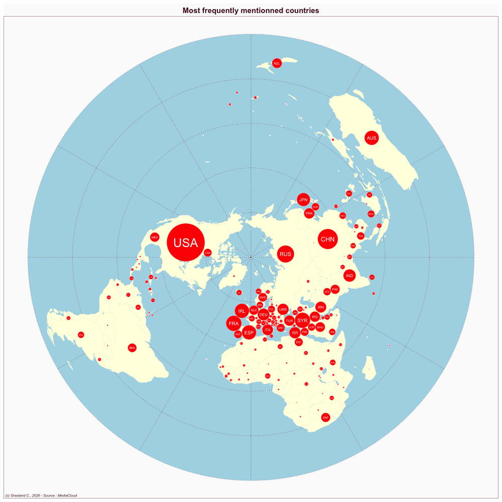

United Kingdom
- Website : The Independent
Scale
- Global
- National
Topics
- General news
- Political news
- Economic news
Publications
Knight M. 2015. Data journalism in the UK: A preliminary analysis of form and content. Journal of Media practice 16: 55–72